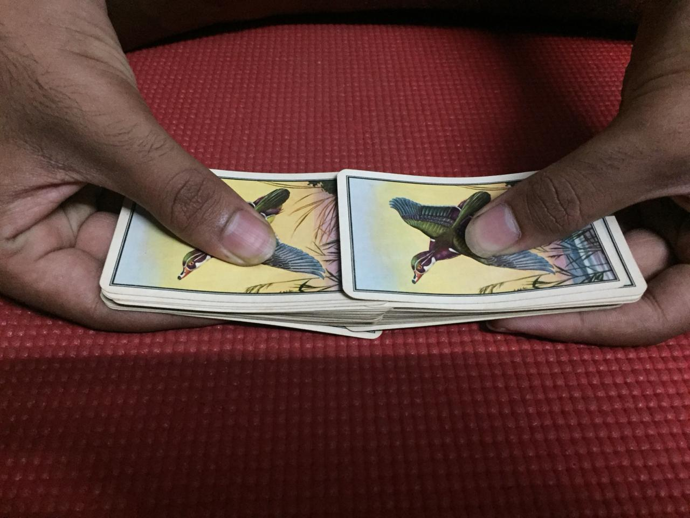

At some point in your life, you would have seen a magician shuffle a deck of cards, and been left in awe. You would’ve wondered how does he do this so effortlessly. And if you were like me, you would’ve tried your hand at this feat, only to end up with empty hands, cards lying around in a mess and a puzzled look on your face.
I am no expert at this, but I will teach you how to pull it off. There are two steps, the shuffle and the riffle.
The shuffle is the first step. Split the deck into two almost equal halves. Now align the cards in each deck. Hold one deck in each hand. The way you hold it is very important. Your index and middle fingers are placed on one of the shorter side of the cards. And your thumb is on the other. You want to grip just tight enough, so as to not bend the cards. The figure along side shows how hold the cards more clearly. Now while shuffling, lift the decks about 2-3cms above the ground or table. You want to hold both decks beside each other. Your thumbs should come on the inside and the other side on the outside. The cards should fall in such a way that they overlap about just one fourth of the length. You will have to fold the cards just a bit, to be able to do this. Your thumb is what plays a major role while shuffling. You want to release cards from both decks alternatively. To achieve this, your thumb should bend the tip of the card slightly outward and then as you move your thumb up the deck the card is released. Your thumb should move up the deck slowly, so that you don’t release the cards all at once. This step will require some practice.
At the end of this step you should end up with a pile of two sets of card inserted into each other around one fourth of the length.
The second stage is the riffle. This part is slightly harder than the shuffle. But, definitely with some practice, it should be much easier. So how to do it?
Place your four fingers of either hands on either side of the deck, as shown in the figure. Then place your thumbs, one third of the length from either sides. By one third I mean one third of the total length. Then lift them up just a bit of the ground and bend the cards slightly inwards, as shown in the picture. The cards will magically align themselves. Initially it might not be perfect, but once you get some practice on how much to bend the card, it will be sight for the eyes.
Note that you are bending it the same side as the side you bent while shuffling. So you are bending twice the same way. So if you want to you can pick up and then flip the cards over, but this won't look cool. So once your done shuffling, make sure you bend the cards the opposite direction to avoid being left behin with bent cards.